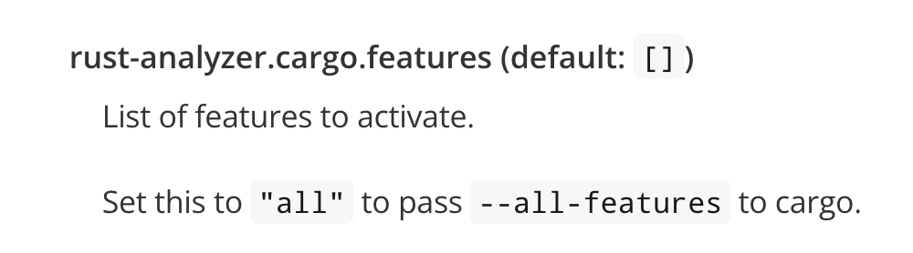

介绍
wgpu 学习
# wgpu
wasm-bindgen指南 (wasmdev.cn) (opens new window)
要想使用tracing的话得启用web_sys_unstable_apis
RUSTFLAGS=--cfg=web_sys_unstable_apis trunk serve
或者是在项目根目录创建**.cargo/config.toml**文件
[target.wasm32-unknown-unknown]
rustflags=["--cfg=web_sys_unstable_apis"]
运行命令trunk serve即可
# 条件编译编辑器提示
在setting.json中添加
{
"rust-analyzer.check.features": "all",
"rust-analyzer.cargo.features": "all",
}
# 1.安装依赖
[dependencies]
console_error_panic_hook = "0.1.7"
tracing = "0.1.37"
tracing-wasm = "0.2.1"
wasm-bindgen = "0.2.87"
wasm-bindgen-futures = "0.4.37"
wgpu = "0.17.0"
web-sys = { version = "0.3.64", features = [
"Window",
"Document",
"HtmlElement",
"Node",
"Text",
"HtmlCanvasElement",
"GpuCanvasContext",
"Gpu",
] }
winit = "0.28.6"
serde = { version = "1.0.183", features = ["derive"] }
serde_json = "1.0.104"
# 2.初始化
由于wgpu有些功能是异步的，所以我们借用wasm_bindgen_futures创建一个浏览器异步线程
这里必须得安装winit库，不然创建不了surface
use serde_json::Result;
use tracing::info;
use winit::{dpi::PhysicalSize, event_loop::EventLoop, window::Window};
fn main() {
init();
wasm_bindgen_futures::spawn_local(async {
run().await.unwrap();
});
}
fn init() {
tracing_wasm::set_as_global_default();
console_error_panic_hook::set_once();
}
async fn run() -> Result<()> {
let w=create_window();
info!("{:#?}", w);
Ok(())
}
fn create_window() -> Window {
let event_loop = EventLoop::new();
let w = Window::new(&event_loop).unwrap();
w.set_inner_size(PhysicalSize::new(450, 400));
#[cfg(target_arch = "wasm32")]
use winit::platform::web::WindowExtWebSys;
web_sys::window()
.and_then(|win| win.document())
.and_then(|doc| {
let main = doc.get_element_by_id("main").expect("获取容器失败");
#[cfg(target_arch = "wasm32")]
{
let canvas = web_sys::Element::from(w.canvas());
main.append_child(&canvas).ok();
}
Some(())
});
w
}
# 3.创建gpu实例
在new函数中进行wgpu准备工作
Lib.rs
use wgpu::{Device, Features, Instance, PowerPreference, Queue, Surface, SurfaceConfiguration, DeviceDescriptor};
use winit::{dpi::PhysicalSize, window::Window};
#[derive(Debug)]
pub struct WgpuState {
device: Device,
queue: Queue,
surface: Surface,
size: PhysicalSize<u32>,
w: Window,
}
impl WgpuState {
//创建instance
pub async fn new(w: Window) -> Self {
let size = w.inner_size();
//创建实例
let instance = Instance::new(wgpu::InstanceDescriptor {
backends: wgpu::Backends::all(),
dx12_shader_compiler: Default::default(),
});
//创建surface
let surface = unsafe { instance.create_surface(&w).expect("create surface") };
//创建适配器
let adapter = instance
.request_adapter(&wgpu::RequestAdapterOptionsBase {
power_preference: PowerPreference::default(),
force_fallback_adapter: false,
compatible_surface: Some(&surface),
})
.await
.expect("request adapter");
//创建设备对象和队列
let (device, queue) = adapter
.request_device(
&DeviceDescriptor {
label: None,
features: Features::empty(),
limits: wgpu::Limits::downlevel_webgl2_defaults(),
},
None,
)
.await
.expect("request device");
Self{
device,
queue,
surface,
size,
w,
}
}
pub fn get_window(&self) -> &Window {
&self.w
}
}
main.rs
async fn run() -> Result<()> {
let w=create_window();
let wgpu_state=wgpu_truk::WgpuState::new(w).await;
info!("{:#?}", wgpu_state);
Ok(())
}